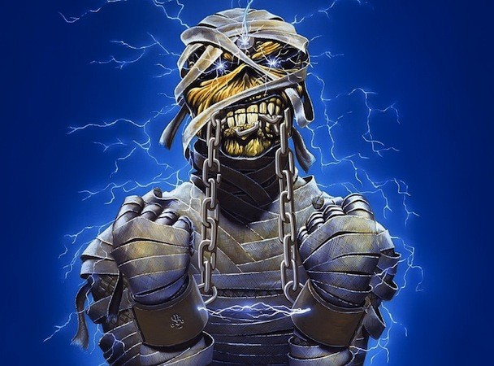
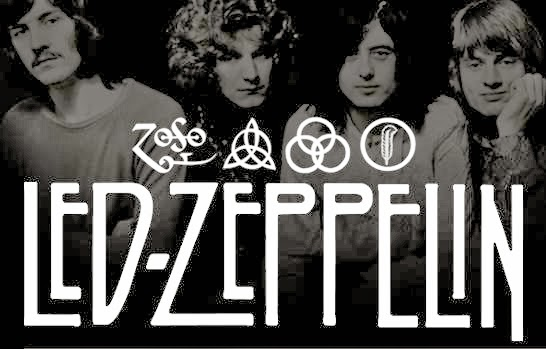

Iron Maiden
 Iron Maiden es una banda británica de heavy metal, fundada en 1975 por el bajista Steve Harris. Es considerada una de las bandas de Heavy Metal más importantes de todos los tiempos. Ha vendido más de 100 millones de discos en todo el mundo, a pesar de haber contado con poco apoyo de la radio y la televisión comercial durante la mayor parte de su carrera. Sin embargo, la banda basó su éxito en llegar directamente a los aficionados, grabando discos de alta calidad y realizando actuaciones en vivo consideradas de las mejores del género. Iron Maiden ha obtenido diversos reconocimientos a lo largo de su carrera como el Premio Ivor Novello para el logro internacional en 2002. En 2005 fueron incluidos en el Hollywood's RockWalk en Sunset Boulevard, Los Ángeles. En 2009 fue ganadora del premio Mejor Performance en Vivo en los BRIT Awards, el premio musical más importante del Reino Unido. En el año 2011 también obtuvieron un Grammy, en la categoría de 'Mejor interpretación de Metal', por el tema 'El Dorado'.4Además ha ganado el premio de mejor banda metal británica del año en varias ocasiones, en los "Metal Hammer Golden Gods Awards",5 entre otros reconocimientos. Durante sus más de 40 años de trayectoria, Iron Maiden ha sido identificada gráficamente por su famosa mascota "Eddie the Head", quien ha aparecido en la gran mayoría de las portadas de sus álbumes y singles, así como en sus presentaciones en vivo. Tras varias audiciones y cambios en su formación, esta finalmente se consolidó con el vocalista Paul Di'Anno, los guitarristas Dave Murray y Dennis Stratton, y el baterista Clive Burr, siempre bajo el liderazgo del bajista Steve Harris. Luego de muchas giras por todo el Reino Unido, en 1979 lanzan su EP llamado The Soundhouse Tapes, y en 1980, su álbum debut homónimo, el cual llegó al cuarto puesto de las listas británicas, sin mediar promoción masiva alguna. Ese mismo año, Stratton fue reemplazado por el guitarrista Adrian Smith, con quién publicaron el álbum Killers (1981).6 Luego, y tras la salida de Di Anno, ese mismo año, el cantante Bruce Dickinson entró para ocupar el puesto de vocalista para el álbum The Number of the Beast de 1982, el cual llegó al número uno de las listas británicas, marcando el inicio de una serie de lanzamientos de impacto.7 Para el año 1983 la banda lanzó el álbum Piece of Mind, que contaba como novedad con la salida del baterista Clive Burr, y el ingreso de Nicko McBrain en su reemplazo. A partir de allí, se consolidó la alineación más estable y exitosa que ha tenido la agrupación, la cual ha realizado numerosas giras y álbumes. Iron Maiden ha grabado 16 álbumes de estudio, y es considerada una de las bandas más influyentes no solo para el heavy metal y sus respectivos subgéneros, sino también para diversas agrupaciones de rock, e incluso artistas de otros estilos.
Led Zeppelin

Led Zeppelin fue un grupo británico de hard rock fundado en 1968 por el guitarrista Jimmy Page, quien había pertenecido a The Yardbirds. La banda estuvo integrada por John Paul Jones como bajista y teclista, al vocalista Robert Plant y a John Bonham a la batería (que había coincidido con Plant en The Band of Joy).
Led Zeppelin presentó elementos de un amplio espectro de influencias, como el blues, el rock and roll, el soul, la música celta, la música india, el folk, e incluso el country.
Más de treinta años después de la disgregación de la banda en 1980, la música de Led Zeppelin continúa vendiéndose, disfruta de una amplia difusión radiofónica, y ha demostrado ser una de las bandas más influyentes en la música rock. Hasta la fecha, ha vendido más de 300 millones de álbumes en el mundo, incluidos 111 millones sólo en los Estados Unidos, y es la segunda banda con más discos de diamante (otorgados cada diez millones de ventas en EE. UU.) de la historia de la música, sólo por detrás de The Beatles. Los discos con esta certificación son: Led Zeppelin IV (23 millones), Physical Graffiti (15 millones), Led Zeppelin II (12 millones), Houses of the Holy (11 millones) y Box Set (10 millones). En 2004, la revista Rolling Stone los clasificó en el número catorce en su lista de los 100 artistas más grandes de todos los tiempo.
- Iron Maiden
- Bruce Dickinson
- led Zeppelin
- heavy metal
- Gran bretaña
- Jimmy Page
- Robert Plant